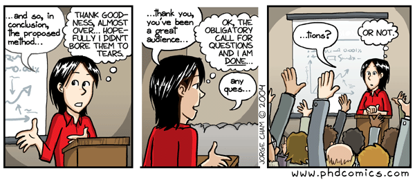

Seminars & Colloquia
- ‘‘Numerical Relativity Surrogate model for eccentric binary black hole gravitational waveform’, Simulating Extreme Spacetime (SXS) Weekly Seminar [Dec 2020]
- ‘Improved analysis of GW190412 with a precessing numerical relativity surrogate waveform model’, PostDoc/Grad Student Seminar, Institute for Computational Experimental Research in Mathematics(ICERM), Brown University, USA [November 2020]
Conference Talks
- ‘Improved analysis of GW190412 with a precessing numerical relativity surrogate waveform model’, 237th Meeting of the American Astronomical Society (AAS), Session: Compact Mergers Observed CompactBinary Populations through Gravitational Waves, Virtual Meeting [Jan 2021]
- ‘Improved analysis of GW190412 with a precessing numerical relativity surrogate waveform model’, MidWest Relativity Meeting 2020, University of Notre Dame, USA [October 2020]
- ‘Improved analysis of GW190412 with a precessing numerical relativity surrogate waveform model’, Mathematical and Computational Approaches for Solving the Source- Free Einstein Field Equations, Advances in Computational Relativity, ICERM, Brown University, USA [October 2020] (Lightning Talk)
- ‘Numerical Relativity Surrogate model for eccentric binary black hole gravitational waveform’, The XIII International LISA Symposium, originally planned at Glasgow, Virtual Meeting [September 2020]
- ‘Acceleration Relations in the Milky Way as Differentiators of Modified Gravity Theories’, Cosmology from Home 2020 Conference, Virtual Meeting [August 2020]
- ‘Detectability and Parameter Estimation Accuracy for Intermediate Mass Black Holes (IMBHs) with current generation detectors’, 23rd CAPRA Meeting on Radiation Reaction in General Relativity, University of Texas Austin, Virtual Meeting [June 2020]
- ‘Testing the “no-hair” nature of binary black holes using the consistency of multipolar gravitational radiation’, 236th Meeting of the American Astronomical Society (AAS), Session: Gravitational Waves & Multi-messenger Astronomy I, Virtual Meeting, Originally scheduled to be at Madison, USA [June 2020]
- ‘Testing the “no-hair” nature of binary black holes using the consistency of multipolar gravitational radiation’, APS April Meeting 2020, Session R05: Tests of General Relativity with Gravitational Waves II, Washington DC, USA [April 2020]
- ‘Testing Weyl gravity at galactic and extra-galactic scales’, ‘Cosmology Next Decade’ Winter School & Workshop, ICTS-TIFR, India [Jan 2019] (Student Talk)
Conference Posters
- Detectability and Parameter Estimation Accuracy for Intermediate Mass Black Holes (IMBHs) with current generation detectors’, Tousif Islam; 39th Meeting of Astronomy Society of India (ASI), Feb 18-23, 2021, India
- Improved analysis of GW190412 with a precessing numerical relativity surrogate waveform model, Tousif Islam, Scott Field, Carl-Johan Haster & Rory Smith; 30th Meeting of Indian Association for General Relativity and Gravitation (IAGRG), Dec 19-20, 2020, IIT Gandhinagar, India
- ‘Testing the “no-hair” nature of binary black holes using the consistency of multipolar gravitational radiation’, Tousif Islam, Ajit K. Mehta, Abhirup Ghosh, Vijay Varma, P. Ajith & B. S. Sathyaprakash; JSI Workshop : The New Faces of Black Holes, Nov 11-13, 2019, Joint Space Institute (JSI), Maryland, USA
- ‘“No-hair” tests for binary black holes’, Tousif Islam, Abhirup Ghosh, Ajit K. Mehta & P. Ajith; ICTS In-House Meeting, Apr 23rd, 2019, ICTS, Bengaluru, India
- ‘A “no-hair” test for binary black holes’, Tousif Islam, Abhirup Ghosh, Ajit K. Mehta & P. Ajith; 30th Meeting of Indian Association for General Relativity and Gravitation (IAGRG), Jan 3-5, 2019, Hyderabad, India